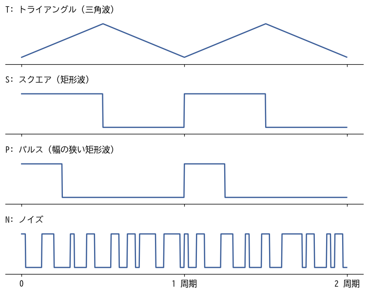
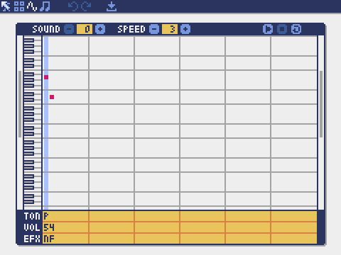
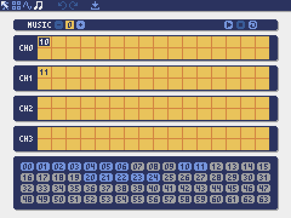

5. アセット制作（2）サウンド
音はゲームの手触りを大きく左右する。弾を撃つ音、敵が爆発する音があるだけで、同じ動きでも爽快感がまるで違う。この章では、Pyxel Editor のサウンドエディタとミュージックエディタを使い、効果音と BGM を作る。作曲の経験がなくても作れるように、音楽の基礎知識も必要な分だけ説明する。
5.1. Pyxel の音の仕組み
5.1.1. サウンド
Pyxel の音の最小単位はサウンドである。サウンドは、音符（ノート）を一列に並べたもので、最初から順に 1 つずつ鳴らす。同時に 2 つ以上の音を鳴らすことはできない。和音を鳴らしたいときは、別のチャンネルで別のサウンドを鳴らす。
ノートごとに、表 5.1 の 4 つの値を決める。また、サウンド全体で 1 つの再生速度（speed）を決める。
値 |
内容 |
|---|---|
音の高さ |
C0 ～ B4 の 60 段階と休符。数字はオクターブを表し、A2 が 440 Hz（一般的な音楽の「ラ」）である。 |
音色（トーン） |
T（トライアングル）、S（スクエア）、P（パルス）、N（ノイズ）の 4 種類。 |
音量 |
0 ～ 7 の 8 段階。 |
エフェクト |
N（なし）、S（スライド：前のノートから音の高さをなめらかに変える）、V（ビブラート：音の高さを揺らす）、F（フェードアウト：ノート全体で音量を下げる）、H（ハーフフェードアウト：ノートの後半で音量を下げる）、Q（クォーターフェードアウト：ノートの最後の 4 分の 1 で音量を下げる）の 6 種類。 |
再生速度は、1 つのノートを鳴らす長さを 1/120 秒単位で表す。speed が 3 なら 1 ノートは 0.025 秒、speed が 20 なら約 0.17 秒になる。値が小さいほど速く鳴る。効果音には 1 ～ 9 程度、メロディには 10 以上がよく使われる。
5.1.2. 音色
4 種類の音色の波形を図 5.1 に示す。

図 5.1 4 種類の音色の波形
音色 |
特徴 |
主な用途 |
|---|---|---|
T（トライアングル） |
角のない柔らかい音。低い音でもこもりにくい。 |
ベース、落ち着いたメロディ |
S（スクエア） |
はっきりした、いかにもレトロゲームらしい音。 |
メロディ、決定音 |
P（パルス） |
スクエアより細く、鋭い音。 |
メロディ、ショット音 |
N（ノイズ） |
「ザー」という雑音。高さを変えると音の質感が変わる。 |
爆発音、ドラム |
5.1.3. ミュージックとチャンネル
Pyxel は 4 つのチャンネルを持ち、チャンネルごとに 1 つのサウンドを同時に鳴らせる。ミュージックは、チャンネルごとに「鳴らすサウンドの番号の並び」を決めたものである。たとえば、チャンネル 0 でメロディのサウンドを、チャンネル 1 でベースのサウンドを、チャンネル 2 でドラムのサウンドを同時に鳴らすと、1 つの曲になる。
5.2. サウンドエディタ
サウンドエディタの画面を図 5.2 に示す。

図 5.2 サウンドエディタ（サウンド 0 を表示している）
部分 |
役割 |
|---|---|
SOUND |
編集するサウンドの番号（0 ～ 63）を選ぶ。 |
SPEED |
再生速度を決める。 |
再生、停止、ループのボタン |
スペースキーで再生と停止を切り替える。L キーでループ再生を切り替える。 |
ピアノロール |
横軸が時間、縦軸が音の高さを表す。クリックした位置にノートを置く。 |
TON、VOL、EFX |
各ノートの音色、音量、エフェクトを、文字や数字で入力する。 |
ピアノロールでは、マウスのほかに PC のキーボードでもノートを入力できる。Z、S、X、D、C、V、G、B、H、N、J、M のキーが 1 オクターブ分のピアノの鍵盤（ド、ド#、レ、レ#、…、シ）に対応し、Q、2、W、3、E、R、5、T、6、Y、7、U のキーがその 1 つ上のオクターブに対応する。A キーは休符である。これらのキーを押しながら Enter キーを押すと、カーソルの位置にノートが入る。鍵盤の範囲は PageUp キーと PageDown キーで上下できる。上下の矢印キーでピアノロールと TON、VOL、EFX の行を行き来し、TON の行では T、S、P、N を、VOL の行では 0 ～ 7 を、EFX の行では N、S、V、F、H、Q を入力する。
1 つのサウンドに置けるノートは、Pyxel Editor では最大 48 個である。
5.3. 効果音を作る
5.3.1. 効果音を作るときの定石
効果音には、次のような定石がある。
短くする。効果音は何度も鳴るので、長いとうるさく感じる。0.05 ～ 0.5 秒程度にする。
高い音から低い音へ下げる。弾を撃つ、ダメージを受けるといった動作には、音程が下がる音が合う。
低い音から高い音へ上げる。決定、アイテムを取るといった前向きな出来事には、音程が上がる音が合う。
爆発にはノイズを使う。ノイズの高さを下げながら、音量を徐々に小さくする。
最後をフェードアウトさせる。最後のノートのエフェクトを F にすると、音がぷつりと切れずに自然に消える。
5.3.2. 題材ゲームの効果音
題材ゲームの効果音は、リスト 5.1 のように定義した。Sound.set() の引数は、音の高さ、音色、音量、エフェクトを表す文字列と、再生速度である。音の高さは「音名（c ～ b）、必要なら # か -、オクターブ（0 ～ 4）」を 1 つのノートとして並べ、休符は r で表す。音色、音量、エフェクトの文字列がノートの数より短い場合は、最初から繰り返して使われる。
346 snd = pyxel.sounds
347 # 効果音 (チャンネル 3 で鳴らす)
348 snd[0].set("a3d3", "p", "54", "nf", 3) # 自機の弾
349 snd[1].set("c2a1f1d1c1", "n", "76543", "nnnnf", 6) # 敵の爆発
350 snd[2].set("c3g2c2g1c1g0c0", "n", "7776543", "nnnnnnf", 9) # 自機の被弾
351 snd[3].set("c3e3g3c4", "s", "6", "nnnf", 5) # 決定
352 snd[4].set("a2ra2ra2r", "s", "6", "n", 12) # ボス出現の警告
353 snd[5].set("e2d2c2b1a1rrr", "t", "7", "nnnnf", 18) # ゲームオーバー
354 snd[6].set("g1c1", "n", "4", "f", 3) # 敵に命中 (倒せなかったとき)
自機の弾（サウンド 0）：パルスで a3 から d3 へ一気に下げる。speed 3 の 2 ノートで、0.05 秒しかない。連射しても邪魔にならない短さにしている。
敵の爆発（サウンド 1）：ノイズを c2 から c1 へ下げながら、音量も 7 から 3 へ下げる。
自機がやられた音（サウンド 2）：敵の爆発より長く、低くまで下げて、重大な出来事であることを伝える。
決定（サウンド 3）：スクエアでド、ミ、ソ、ドと上がる。前向きな音の典型である。
警告（サウンド 4）：同じ音と休符を交互に鳴らし、サイレンのように聞かせる。
ゲームオーバー（サウンド 5）：トライアングルで、ゆっくり下がる短いフレーズにする。
命中音（サウンド 6）：ノイズの短く小さな音。弾が当たったが倒せなかったことを、爆発音と区別して伝える。
Pyxel Editor でこれらを作る場合は、SOUND の番号を合わせ、ピアノロールにノートを置き、TON、VOL、EFX の行と SPEED を同じ値にすればよい。作ったら何度も再生し、実際のゲームの中でも鳴らして確かめる。単独で聞くと良い音でも、ゲームの中ではうるさく感じることがある。
5.4. 音楽の基礎知識
BGM を作る前に、必要な音楽の知識を確認しておく。
5.4.1. 音名とオクターブ
ドレミファソラシは、英語の音名では C、D、E、F、G、A、B と書く。隣り合う白鍵の間にある黒鍵の音は、# を付けて C#（ド#）のように表す。B の次は 1 つ上のオクターブの C に戻る。Pyxel では、c2 の 1 オクターブ上が c3 である。
5.4.2. 曲を構成する役割
ゲームの BGM は、多くの場合 3 つの役割に分かれている。
メロディ：口ずさめる主旋律。パルスやスクエアで鳴らす。
ベース：低い音で曲の土台を支える。トライアングルで鳴らすことが多い。
ドラム：リズムを刻む。ノイズの低い音を太鼓、高い音をシンバルの代わりにする。
5.4.3. コード進行
コードとは和音のことで、曲の中でコードが移り変わる順番をコード進行と呼ぶ。作曲の経験がない場合は、よく使われるコード進行を借りるのが近道である。題材ゲームのプレイ中の BGM は、Am（ラ・ド・ミ）、F（ファ・ラ・ド）、G（ソ・シ・レ）、Am という、少し緊張感のある進行を使っている。
コード進行が決まれば、あとは次の手順で各パートを作れる。
ベースは、各コードの一番下の音（Am ならラ、F ならファ）を刻む。
メロディは、拍の頭（強拍）にコードに含まれる音を置き、その間を自由につなぐ。
ドラムは、太鼓とシンバルを交互に鳴らす単純なパターンを繰り返す。
5.5. BGM を作る
5.5.1. 題材ゲームの BGM
プレイ中の BGM（ミュージック 1）は、リスト 5.2 のサウンド 20 ～ 24 でできている。どのサウンドも 32 ノート、speed 20 で、長さはすべて約 5.3 秒にそろえてある。
372 # プレイ中の BGM (ミュージック 1)
373 snd[20].set(
374 "a2re3ra3g3e3r f3rc3rf3e3c3r g3rd3rg3f3d3b2 c3re3ra2rrr",
375 "p",
376 "5",
377 "nnnnnnnf",
378 20,
379 )
380 snd[21].set(
381 "e3e3re3d3c3d3e3 f3rf3re3d3c3r d3d3rd3c3b2c3d3 e3rg#2rb2re3r",
382 "p",
383 "5",
384 "nnnnnnnf",
385 20,
386 )
387 snd[22].set(
388 "a0a1a0a1a0a1a0a1 f0f1f0f1f0f1f0f1 g0g1g0g1g0g1g0g1 a0a1a0a1a0a1a0a1",
389 "t",
390 "7",
391 "n",
392 20,
393 )
394 snd[23].set(
395 "a0a1a0a1a0a1a0a1 f0f1f0f1f0f1f0f1 g0g1g0g1g0g1g0g1 e0e1e0e1e0e1e0e1",
396 "t",
397 "7",
398 "n",
399 20,
400 )
401 snd[24].set(
402 "c1ra3rc1c1a3r c1ra3rc1c1a3r c1ra3rc1c1a3r c1ra3rc1a3a3a3",
403 "n",
404 "60406640",
405 "f",
406 20,
407 )
サウンド 20 と 21 はメロディである。8 ノートずつ Am、F、G、Am（21 では最後を E に変えて次へつなぐ）の各コードに合わせている。文字列中の空白は無視されるので、読みやすさのためにコードごとに区切っている。
サウンド 22 と 23 はベースである。各コードの音を 1 オクターブずつ上下させて、躍動感を出している。
サウンド 24 はドラムである。ノイズの c1（低い音）を太鼓、a3（高い音）をシンバルの代わりにしている。
5.5.2. ミュージックエディタ
サウンドを曲にまとめるには、ミュージックエディタを使う（図 5.3）。

図 5.3 ミュージックエディタ（ミュージック 0 を表示している）
MUSIC の番号で編集するミュージックを選び、CH0 ～ CH3 の行に、そのチャンネルで鳴らすサウンドの番号を順に並べる。上下の矢印キーで編集するチャンネルを、左右の矢印キーで入力位置を選び、画面下の番号の一覧からサウンドを選んで入れる。1 つのチャンネルに並べられるサウンドは最大 32 個である。スペースキーで再生と停止を切り替え、L キーでループ再生を切り替える。
ミュージック 1 は、コードでは次のように定義している。
410def make_musics() -> None:
411 """サウンドを組み合わせて BGM (ミュージック) を定義する。"""
412 pyxel.musics[0].set([10], [11])
413 pyxel.musics[1].set([20, 21], [22, 23], [24, 24])
チャンネル 0 ではサウンド 20、21 の順に、チャンネル 1 では 22、23 の順に、チャンネル 2 では 24 を 2 回鳴らす。チャンネル 3 は空けておき、効果音に使う。ループ再生したときに各パートがずれないように、各チャンネルの合計の長さをそろえておくことが大切である。
5.6. コードから音を鳴らす
プログラムから音を鳴らす関数を表 5.4 にまとめる。
関数 |
動作 |
|---|---|
|
チャンネル ch でサウンド snd を鳴らす。snd には番号のリストも指定でき、その順に続けて鳴らす。3 番目の引数 sec は再生を始める位置（秒）なので、ループ再生は |
|
ミュージック msc を鳴らす。ループ再生は |
|
チャンネル ch の音を止める。引数を省略するとすべてのチャンネルの音を止める。 |
同じチャンネルで新しい音を鳴らすと、それまで鳴っていた音は止まる。BGM と同じチャンネルで効果音を鳴らすと、BGM の一部が途切れてしまう。題材ゲームでは、BGM が使わないチャンネル 3 で効果音を鳴らす。
1pyxel.playm(1, loop=True) # プレイ中の BGM をループ再生する
2pyxel.play(3, 0) # チャンネル 3 でサウンド 0 (ショット音) を鳴らす
3pyxel.stop() # すべての音を止める
5.7. MML と自動作曲
Pyxel 2 では、MML（Music Macro Language）という文字列でも音を指定できる。MML は、音名や音の長さを文字で書き並べる、昔から使われている楽譜の書き方である。pyxel.play() の snd に MML の文字列を渡すと、その場で鳴らせる。
1# テンポ 120、音色 1 (スクエア)、オクターブ 4、8 分音符でドレミファソラシド
2pyxel.play(0, "T120 @1 O4 L8 CDEFGAB>C")
MML ではオクターブの数え方が Sound.set() と異なり、O4 の A が 440 Hz である。使えるコマンドは Pyxel MML Commands にまとめられている。
また、pyxel.gen_bgm() を使うと、BGM を自動で作れる。引数には、曲の雰囲気（0 ～ 7）、移調する半音の数、楽器の編成（0 ～ 3）、乱数の種を指定する。戻り値は、チャンネルごとの MML の文字列のリストである。引数 play=True を指定すると、作った曲をそのまま鳴らす。
1# 雰囲気 4 (冒険)、移調なし、編成 1 (メロディ、ベース、ドラム)、乱数の種 7
2mml_list = pyxel.gen_bgm(4, 0, 1, 7, play=True)
プロトタイプの段階で仮の BGM を用意したいときや、曲作りのアイデアがほしいときに便利である。
5.8. まとめ
サウンドはノートの並びで、ノートごとに音の高さ、音色、音量、エフェクトを決める。ミュージックはチャンネルごとにサウンドを並べたものである。
効果音は短くし、出来事の意味に合わせて音程を上げ下げする。爆発にはノイズを使う。
BGM はメロディ、ベース、ドラムに分け、よく使われるコード進行を借りて作る。
BGM と効果音は別のチャンネルで鳴らす。